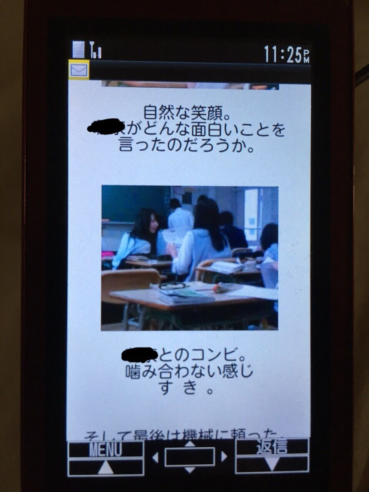
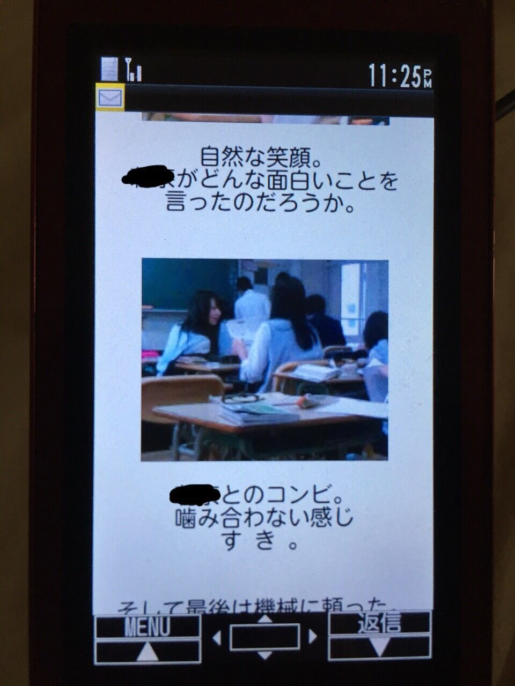
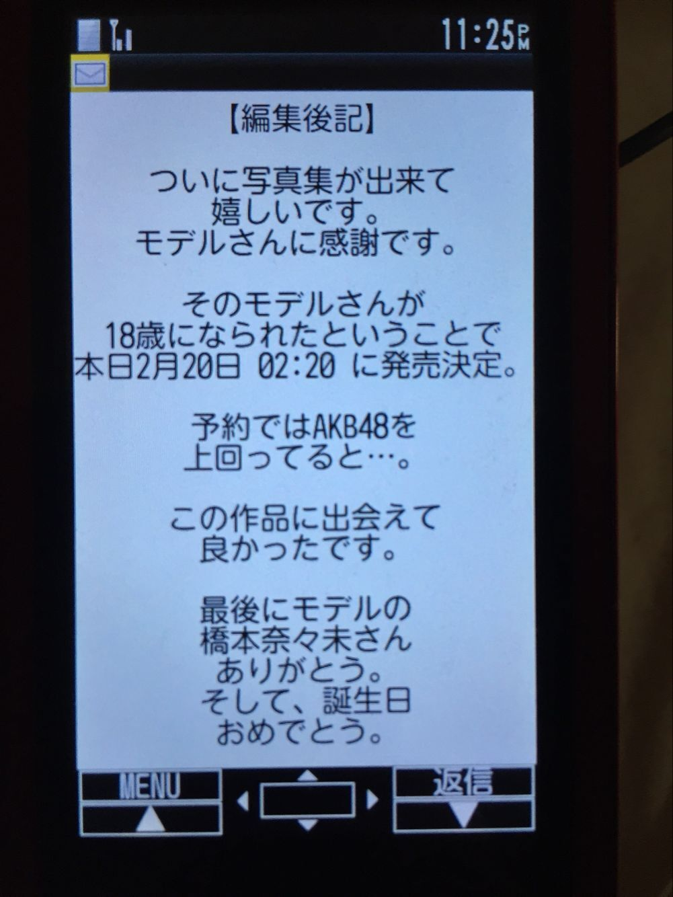
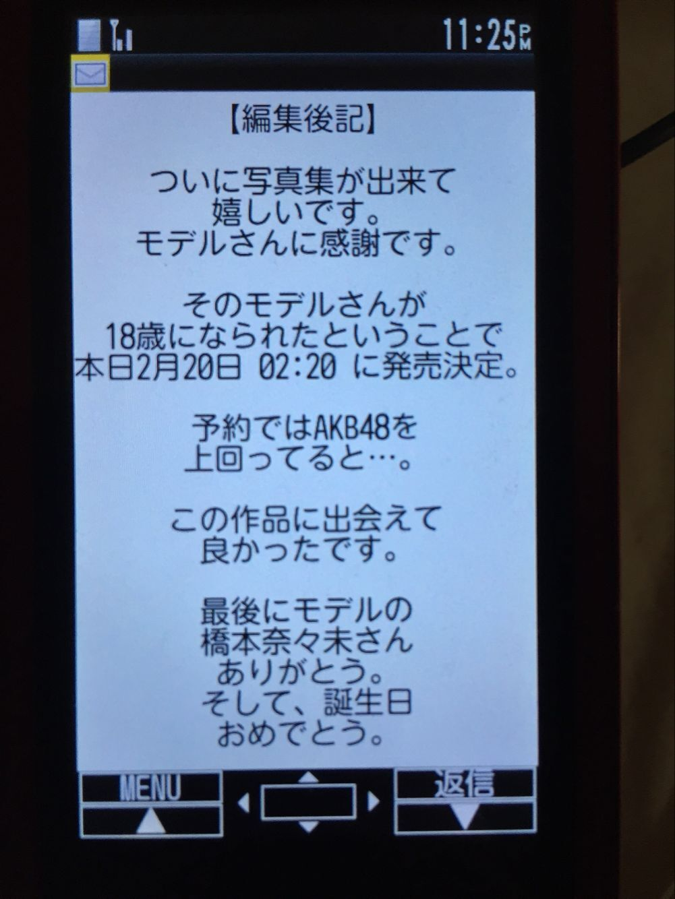

| 2016/04 25 Mon | ハハハおもしろい |
何の気なしに昔のメール見てたんだけど、18歳のわたしの誕生日、友達から最高のメール来てた

 

 


友達からの愛めっちゃ感じる、今更だけどほんとにありがとうりの。笑
当時はメールでわざわざ写真集なんてやってくれてすごく嬉しかったの覚えてるし、まさか自分が後に本当に写真集出すことになるとは思ってなかったなあ
ここでも指標にAKBさんがいたなんて
もう5年前なのに北海道の高校生にもポピュラーだったということだよね、、！
モデルの、とか書かれて
当時は写真とられるのもすきじゃないし自他共に認める写真うつりの悪さだったからなんかこっぱずかしかったけど、今はまさかのモデルとしてのお仕事させてもらえていたりするからなあ...
本当に人生わかんないなあ...
総じて言えるのはわたし高校時代まゆげなさすぎってこと
コメント(738)
2016/04/25 23:48